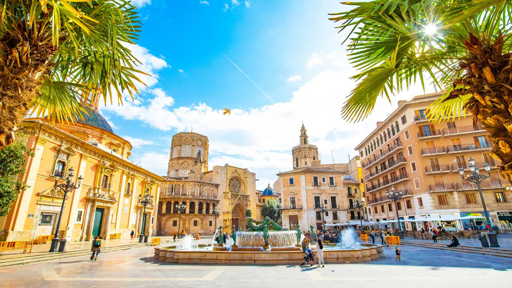

La ciudad portuaria de Valencia se ubica en la costa sureste de España, donde el río Turia se une al mar Mediterráneo. Es famosa por la Ciudad de las Artes y las Ciencias.

Localización
Monumentos
- La Lonja de la Seda
- El Tribunal de las Aguas
- La Malvarrosa
- Museo de Bellas Artes